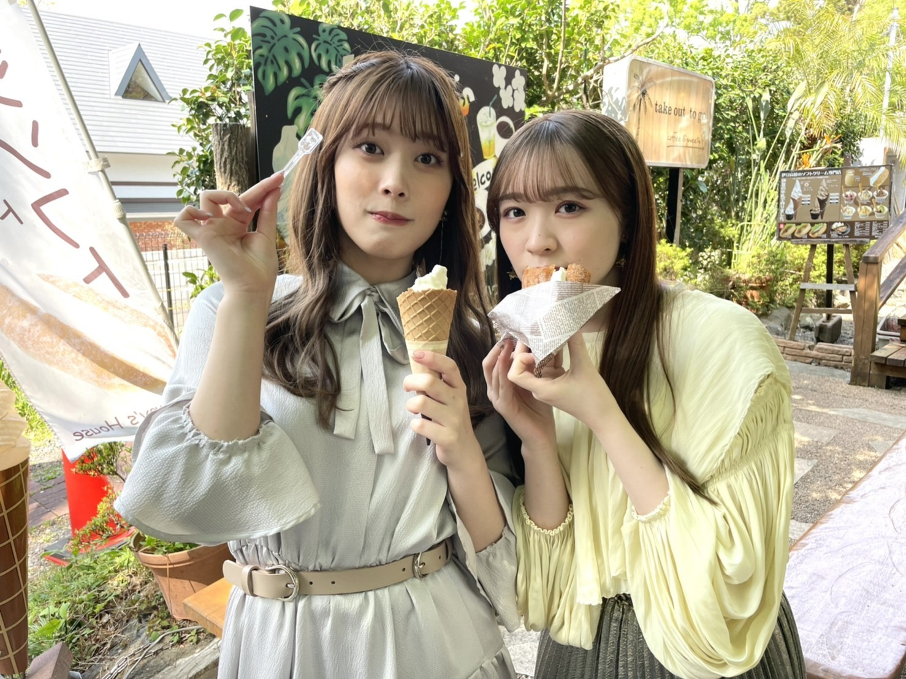
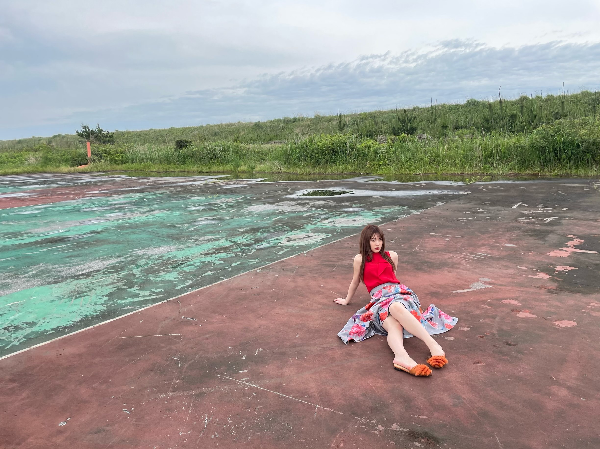

2021/0831Tueこれでおしまいです。ありがとう。
最後のブログです☺︎
約8年半本当にありがとうございました。
みなさんが
純奈ちゃんに出会ってお仕事も学校も
頑張れるようになったって、
お友達がたくさんできたって、
舞台のおもしろさを知ることができたって、
たくさん嬉しい言葉をかけてくれました。
じゅんは
みんながいたから頑張れたし、
大切でだいすきなメンバーができたし
自分が没頭できるお仕事に出会えました。
ファンのみなさんのおかげです。
ありがとう。
スタッフのみなさん
たくさんの道しるべを作ってくださって
ありがとうございました。
いつでも味方になってくれるスタッフさんが
いたからやりたい事もたくさんできました。
歌の楽しさを知れたのも舞台を知れたのも
スタッフのみなさんが導いてくれたからです。
感謝でいっぱいです。ありがとうございました！
メンバーのみんな！
無理せず自分らしく頑張りすぎなくて
いいんだからね☺︎じゅうぶん頑張ってるからね☺︎
ずっと見守ってるよ〜。
純奈を推していて楽しかったよ幸せだったよ
って言ってもらえて気持ちがすっきりしました☺︎
出会えてよかった。幸せだった！
みんな健康に気をつけてね。
これからもよろしくね。
また笑顔で会おうね〜

あーたのしかった！
夢のような時間でした！
またね！
2021.8.31
伊藤純奈
2021/08/31 19:00｜個別ページ｜コメント(1212)
2021/0624Thu今が思い出になるまで
こんばんは！
伊藤純奈です

(てぃーちゃんが送ってくれました)
遅くなりましたが
アンダーライブ2021
配信でみてくださったみなさま
ありがとうございました☺︎
たくさんのリクエストありがとう
ございました〜みなさんと一緒に
作り上げたライブ！という感じがして
よかった！！
最後にまたみんなとの思い出が
たくさんできて嬉しかったな〜
本当にこれからの乃木坂が楽しみだし
外からこれからライブをみれると
思ったらワクワク！
卒業発表をしてからのライブ。
そしてみりあとわたしにとっての
最後のライブ。
最初で最後の2人でユニットを！
「ショパンの嘘つき」を歌わせて
いただきました〜
ずっとやりたかったんだよね。じゅんが
歌でみりあがダンス。
メンバーもスタッフのみなさんも
とっても褒めてくれてうれしかったꪔ̤̥
ずっとずっとみんなの事が愛おしくて
あ〜この人たちに出会えてよかったなあ
乃木坂入ってよかったなあって
心の底から思いました☺︎
そして配信をみてくださったみなさま
本当にありがとうございました！
お花もたくさんありがとうございました！
今までたくさんライブをしてきたけど
これが最後のライブなんだあって今でも
不思議な感じ。振り返ったら色んな事が
あったけど、どれも最高の思い出だし、
自分の好きなことを見つけられた場所だし
感情をありのまま出せる場所だったし
だいすきだったーーー！！！！！！！！

◎「ごめんねFingers crossed」
発売中です！
錆びたコンパスたくさん聞いてください〜！
個人PV「東京の女の子」収録されていますꪔ̤̥

◎EX大衆発売中です

クールに撮って頂きました〜
◎BRODY8月号
舞台組で表紙をやらせて頂きました！
インタビューもよく読んでね〜
◎乃木坂46の「の」
6月27日18時〜！
◎日刊スポーツ 坂道の火曜日
6月29日 掲載して頂きます！
舞台や卒業についてお話したよ〜
松村沙友理さん
卒コンお疲れ様でした♡
送られてきた写真とか動画とかで色々
みたけど本当に綺麗でかわいかった〜！
私はそんな中、Coror of theater「ROSSO」
の稽古ラストパート頑張ってました！
いよいよ27日が初日です☺︎
キャストのみなさん、本当に仲良しで
毎日わいわい楽しくやっております。
みんなかっこいいしなんでも
できる！！すごい！！！！
とんでもなく見応えがあって見てて飽きない
舞台になってます〜〜！
そして、
全公演配信も決まりました！そしてグッズも
たくさん販売されます！
日替わりでキャストの配信特典映像が
毎公演つくのですが私は6月29日 18時公演です！
詳しくはこちらを〜↓
それでは！
新制服の写真でばいばい！
2021/0516Sunだいすきなみなさんへ
私、伊藤純奈は
乃木坂46を卒業します。
14歳で乃木坂に入って
今は22歳。
8年間とてもとてもお世話になりました。
何もできない、何もわからない状態から
スタートしてたくさん自分のことを
知れた気がします。
周りの仲間たちが卒業をしていく中で
自分もこの先のことを考えるようになりました。
卒業について考える時間が増えて、悩んで、
やっぱりいまの自分はもう乃木坂にいるのではなく
知らない道に進んでいくべきだと思い、
卒業を決めました。
まさか自分がアイドルになるなんて
思ってもなかったし、たくさんの
素敵な経験をさせてもらえて大好きで
大切な仲間に出会えて、そしてなにより
こんなにたくさんの方々に応援してもらえる
なんて想像も出来なかった未来でした！
本当に幸せです。幸せ者です。
8年間。
色んな事がありました。青春は
全て乃木坂に捧げました！
乃木坂が大好きだったからここまで
続けられたのだと思います。
こんなに乃木坂をだいすきだと思えるのは
スタッフさん、メンバー、応援して下さってる
みなさんのおかげだと思います。
本当に乃木坂は素敵です！
胸を張って言えます！
なんでこんなに愛おしいんだろうと
思えるくらい、大切な存在です。
だからこそ
外からのみんなも見てみたいと思いました☺︎
そして、
同時に発表したみりあ。
2期生としてずっと一緒に活動してきて
楽しい思い出にも辛かった思い出にも
本当にたくさんの思い出の中に
みりあの存在がいます。
今回も一緒に卒業発表、じゅんは
心強かったよ〜。ありがとう。

5月26日に配信で行われる
アンダーライブがみりあと私にとって
最後のライブになります！
直接みなさんの前でライブをする事が
できずに悔しい気持ちもありますが
全て出し切りたいと思います！
私を推してくれているみなさんは
推していてよかった〜〜！って
思ってくれてるかなあ
悲しい思い、悔しい思いばかりさせて
本当に申し訳なかったなあと今でも
すごく思います。
それでも応援し続けてくれていた
みなさん、本当に本当に心の支えになりました。
ありがとうございます！
活動期間は
8月末までの予定です。
6月末には舞台も控えています！
ファンのみなさんが応援してくれて
好きを伝えてくれて、たくさん支えて
くれたから直接みなさんにお会いして
ありがとうを伝えたかった、というのが
心残りではありますがミーグリで
たくさん伝えさせてください☺︎
残り約3ヶ月。
最後まで乃木坂46の伊藤純奈を
よろしくお願いします☺︎
伊藤純奈
2021/05/16 18:00｜個別ページ｜コメント(1771)
2021/0513Thu8歳☺︎
5月11日で
乃木坂46に加入して
8周年でした。
みなさんいつも応援してくれて
本当にありがとうございます！
みなさんの事がとっても大切で
愛おしいです☺︎
こんばんは！
伊藤純奈です！

Color of Theater 「ROSSO」
出演させて頂きます！
［出演］七海ひろき
大野拓朗
伊藤純奈（乃木坂46）
伶美うらら
東山光明
内海啓貴 ほか
［演出］TETSUHARU
［脚本］浅井さやか（One on One）
［公演日程］2021年6月27日(日)〜6月30日(水)
［劇場］TBS赤坂ACTシアター
久々の舞台です〜嬉しいなあ
無事幕が上がることを祈って...！
期間は短いですが最高の時間になる予感☺︎
公式HP
公式Twitter
https://twitter.com/coloroftheater?s=21

かっこいい〜！

先行抽選受付も始まっていますので
みなさんぜひぜひ〜
そして来週のANNに
みりあとおじゃましますꪔ̤̥

それでは！
2021/0417Satみずいろ
こんばんは！
伊藤純奈です

すごい絶妙な瞬間の写真(笑)
ちゃんとしたお顔の写真は
Instagramに載せています↓
遅くなりましたが
乃木坂46
9th YEAR BIRTHDAY LIVE
〜2期生ライブ〜
みてくださった皆様ありがとう
ございました☺︎
センター企画では
サヨナラの意味を
歌わせて頂きました！
色々な思い入れがあるこの曲を
やっと叶った2期生ライブで
歌う事ができて嬉しかったです。
そしてみおな、卒業おめでとう！
初期から2期生を引っ張ってくれて
大好きでいてくれてありがとう。
やっぱり2期生の真ん中はみおなだなあと
改めて思いました。
最後までたくさんありがとう。
これからもよろしくねっ
配信という形でしたが
1年越しに2期生ライブ、開催できて
本当に幸せでした！！
ありがとうございました！


不思議な子たちの集まりだなあと
改めて思いました。2期生。(笑)
そんなところが愛おしい〜〜！らぶ！
明日18日は
筒美京平さんのトリビュートコンサートに
ひなちまと参加させて頂きます！
今からとっても緊張していますが
楽しみです☺︎よろしくお願い致します！
それでは〜